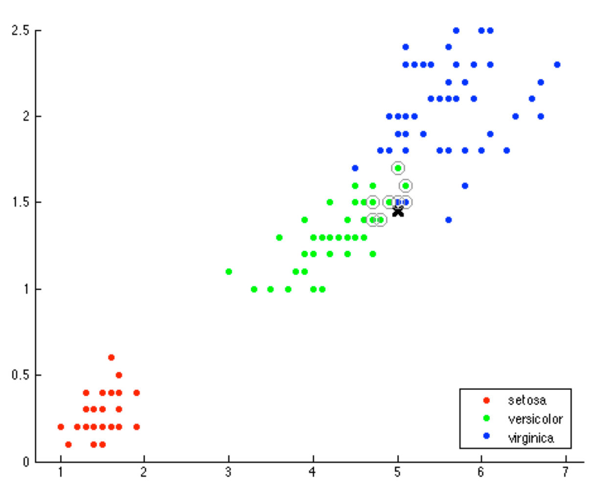
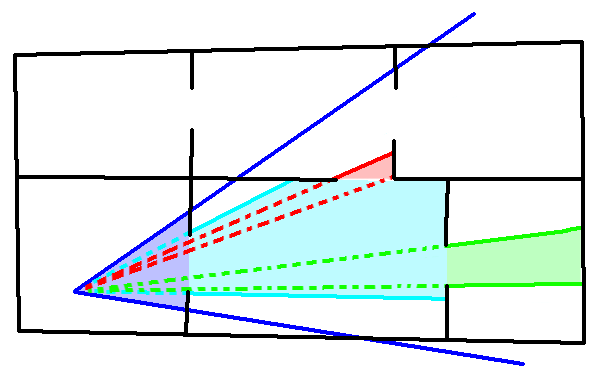
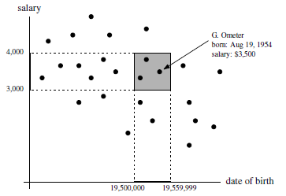
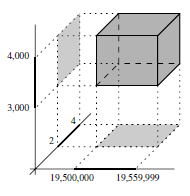
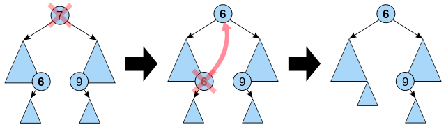

Space Partitioning
Raumunterteilende Datenstrukturen
by Sebastian Häni
k nearest neighbor
 Source: CPVR2.ch11.1.Classification, Marcus HudritschPortal Culling
 Source: http://panda3d.org/manual/index.php/Portal_CullingGeometry Culling
Collision detection
Source: https://www.reddit.com/r/gaming/comments/50g1wa/bullseye_sniper_elite_3Ziel
bessere Performance
Binary Space Partitioning
Orthogonale Bereichsuche
Windowing
Binary Space Partitioning
Painter's Algorithm
- sortiere alle Objekte an der z-Koordinate
- zeichne Objekte der Reihenfolge nach
- sortiere alle Objekte an der z-Koordinate
- erkenne Überschneidungen
- 2.1 unterteile ein Objekt in zwei Flächen
- 2.1 gehe zu 1.
- zeichne Objekte der Reihenfolge nach
BSP Tree
Konstruktion
- Eine Ebene auswählen
- Unterteile die Menge an Polygonen in der Ebene
- Fahre rekursiv mit beiden Halbebenen fort
class BspTreeNode {
Plane partition;
List<Polygon> polygons = new ArrayList<>();
BspTreeNode front;
BspTreeNode back;
}
void buildBspTree(BspTreeNode node, List<Polygon> polygons) {
...
polygons.forEach(polygon -> {
switch(classify(polygon, node.partition)) {
case COINCIDENT: node.polygons.add(polygon); break;
case IN_BACK_OF: backlist.add(polygon); break;
case IN_FRONT_OF: frontlist.add(polygon); break;
case SPANNING: split = split(polygon, tree.partition);
backlist.add(split.getLeft());
frontlist.add(split.getRight());
}
});
...
}
Wahl der Teilebene
-
Abhängig von Use Case
- An Polygonachsen ausgerichtet
- An Koordinatenachse ausgerichtet
- Ziele:
- Baum balancieren
- Schnitte minimieren
Balance ←→ Schnitte
Stoppbedingung
- maximale Fragment Anzahl bei Leaf
- sobald jedes Polygon in einem Leaf ist
- maximale Baumtiefe erreicht
- ...
Suche
switch(classify(v, node.partition) {
case IN_BACK_OF:
renderPolygons(node.front.polygons);
renderPolygons(node.polygons);
renderPolygons(node.back.polygons); break;
case IN_FRONT_OF:
renderPolygons(node.getBack.polygons);
renderPolygons(node.polygons);
renderPolygons(node.getFront.polygons); break;
case COINCIDENT:
renderPolygons(node.front.polygons);
renderPolygons(node.back.polygons); break;
}
Dynamik
- nicht geeignet
- Wird beim Laden des Levels berechnet
Einfügen und Neuberechnung haben die selbe Zeitkomplexität von O(n3)
Binary Space Partitioning
Orthogonale Bereichsuche
Windowing
Orthogonale Bereichsuche
| Employee | |||
|---|---|---|---|
| Name | Birthday | Salary | Kids |
SELECT * FROM Employee WHERE
Salary > 3000 AND
Salary < 4000
SELECT * FROM Employee WHERE
Salary > 3000 AND
Salary < 4000 AND
Birthday > '01-01-1950' AND
Birthday < '01-01-1960'

Source: Computational Geometry - Algorithms and Applications, 3rd Edition Mark de Berg,
Otfried Cheong,
Marc van Kreveld, Mark Overmars
SELECT * FROM Employee WHERE
Salary > 3000 AND
Salary < 4000 AND
Birthday > '01-01-1950' AND
Birthday < '01-01-1960' AND
Kids >= 2 AND
Kids <= 4

Source: Computational Geometry - Algorithms and Applications, 3rd Edition Mark de Berg,
Otfried Cheong,
Marc van Kreveld, Mark Overmars
Kd Tree
class Node {
Split split;
Point point;
Node above;
Node below;
}
class Split {
boolean even;
float coordinate;
}
Node buildKdTree(List<Point> points, int depth) {
if(points.size() == 0)
return null;
if(points.size() == 1)
return new Node(points.get(0));
boolean even = depth % 2 == 0;
{split, pointsAbove, pointsBelow} = split(points, even);
Node nodeAbove = buildKdTree(pointsAbove, depth + 1);
Node nodeBelow = buildKdTree(pointsBelow, depth + 1);
return new Node(split, nodeAbove, noveBelow);
}
Punkte hinzufügen
- nicht alle Punkte müssen aufgeteilt werden
- je mehr Punkte desto unbalancierter ist der Baum
- Rotationsmethode ist nicht anwendbar
Punkte entfernen
- Punkte löschen, Node stehen lassen
- Teilbaum neuberechnen
- Ersatz suchen
Binary Space Partitioning
Orthogonale Bereichsuche
Windowing
Windowing
Interval Tree
class Interval { int start; int end; }
class Node {
int value;
SortedIntervals mid;
Node left;
Node right;
}
class SortedIntervals {
SortedSet<Interval> startpoints;
SortedSet<Interval> endpoints;
}
Node buildIntervalTree(Set<Interval> intervals) {
Node node = new Node();
int endMedian = calcEndpointMedian(intervals);
{left, mid, right} = classify(intervals, endMedian);
node.value = endMedian;
node.mid = mid;
node.left = buildIntervalTree(left);
node.right = buildIntervalTree(right);
return node;
}
Intervalle einfügen und entfernen
 Source: Wikipedia Interval TreeR-Tree
 Source: Wikipedia R Tree
Source: Wikipedia R Tree
- Teilbäume werden in Pages gespeichert
- Nodes können mehr als 2 Children haben
- Jedes Rectangle umschliesst die Children Rectangle
Einfügen in R Tree
- Bewerte Children-Rectangle (Heuristik)
- Gehe zu 1. solange keine Leaf erreicht wurde
- Einfügen
- Ist das Leaf voll muss die Node aufgeteilt werden
- Ist die darüberliegende Node voll muss auch diese aufgeteilt werden
- ...
What have we learned?
Binary Space Partitioning
Painters Algorithm, BSP TreeOrthogonale Bereichsuche
Datenbank Bereichsuche, Kd TreeWindowing
Interval Tree, R-TreeTHE END
Source code & documentation https://github.com/sebastianhaeni/space-partitioning